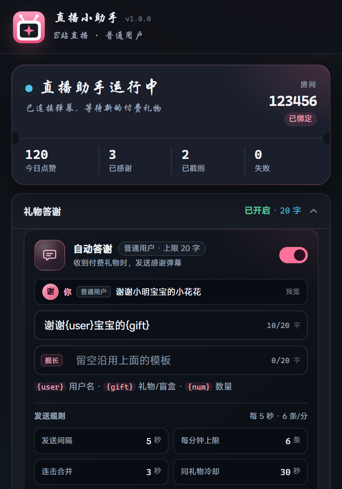

直播小助手
B站直播间里的自动答谢、礼物截图、弹幕库和自动点赞。收到付费礼物自动说谢谢，礼物动画自动连拍，常用弹幕按间隔轮换。全部在本机运行。
- 自动答谢
- 礼物截图
- 弹幕库
- 本地运行
打开项目官网
源码暂未公开

你好，我是 Monologue
B站直播工具「直播小助手」的作者。写 Rust 系统程序、C++ 数据库内核，也写让 AI Agent 更好干活的技能。
都来自真实场景，点进去就能看。
B站直播间里的自动答谢、礼物截图、弹幕库和自动点赞。收到付费礼物自动说谢谢，礼物动画自动连拍，常用弹幕按间隔轮换。全部在本机运行。

一个挂载在 Linux 上的文件系统，记录科研实验真正读了哪些文件、读的是哪一版，让实验能验证、能重来。
给 OceanBase MiniOB 加上向量数据库内核能力：VECTOR 类型、距离函数、Top-N 排序和 IVF_Flat 索引，另配 Flask 网关与 React 可视化控制台。
SELECT id FROM t_vec
ORDER BY distance(emb, ?) LIMIT 5;
给 GPT-6 Astra 创建、审计、改进 AGENTS.md，让项目的长期约定写得更清楚、更少重复。
让长期项目保持同步、可恢复、有据可查。中断之后，能接着上次的进度继续做。
能拿来解决问题的那部分。
工具应该少打扰人，多替人做事。
我是 Monologue。做过「直播小助手」——一个帮 B 站主播自动答谢、礼物截图、轮换弹幕的 Edge 扩展；也写系统工具和 AI Agent 技能，比如让科研实验可重放的 TeamFS，和帮项目把约定写清楚的 AGENTS-Astra。
我喜欢从真实场景出发：先看哪里重复、哪里容易出错，再把它做成顺手的小工具。